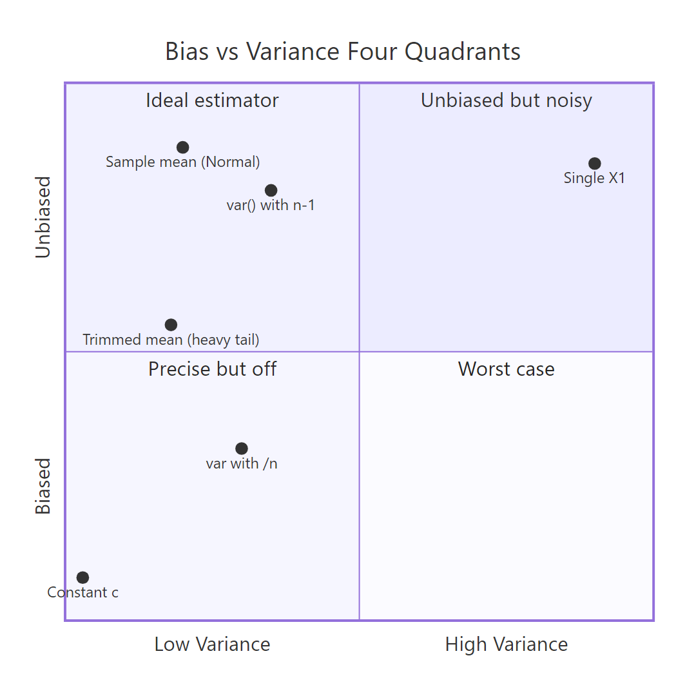
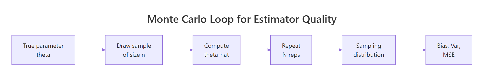

Point Estimation in R: What Makes an Estimator Good? Bias, Variance, and MSE
A point estimator is a rule for turning a sample into a single best-guess value for an unknown population quantity. This tutorial explains what makes an estimator good using the three numbers statisticians rely on most, bias, variance, and mean squared error, then shows how to compute them in R through a few dozen lines of simulation code.
What is a point estimator, and why do we care about bias, variance, and MSE?
Imagine you want to know the average height in a city, but you can only measure 50 people. The sample mean from those 50 is your best guess for the unknown truth. How close is it likely to be, and how often will it miss? Two short numbers, bias and variance, answer both. R lets you measure them directly by simulating the experiment 10,000 times in a second, as below.
The bias is essentially zero (the sample mean is right on target on average). The variance of 2.0 matches the theoretical value $\sigma^2/n = 100/50 = 2$, so our simulation confirms the formula. The MSE sits right next to the variance, which hints at a simple rule we will prove next.
Three numbers summarise how an estimator $\hat\theta$ behaves across repeated samples:
$$\text{Bias}(\hat\theta) = E[\hat\theta] - \theta$$
$$\text{Var}(\hat\theta) = E[(\hat\theta - E[\hat\theta])^2]$$
$$\text{MSE}(\hat\theta) = E[(\hat\theta - \theta)^2]$$
Where:
- $\hat\theta$ (theta hat) = the estimator, a function of the sample
- $\theta$ (theta) = the true parameter we want to estimate
- $E[\cdot]$ = expected value over repeated samples
Bias asks "on average, am I hitting the target?" Variance asks "how spread out are my guesses?" MSE bundles both into one score. The three are connected by a famous identity:
$$\text{MSE}(\hat\theta) = \text{Bias}(\hat\theta)^2 + \text{Var}(\hat\theta)$$
Let's confirm the identity on the numbers we just computed.
The two quantities agree to four decimals. The tiny gap is pure Monte Carlo noise from using 10,000 reps instead of infinity. Increase reps and the gap shrinks. This decomposition is the backbone of everything that follows.
Try it: Repeat the simulation with n = 200 instead of 50 and print the three numbers. Before running, predict which one changes the most.
Click to reveal solution
Explanation: Variance drops from ~2.0 to ~0.5, exactly the predicted factor of 4 because $\sigma^2/n$ scales with $1/n$ and $n$ quadrupled. Bias stays near zero. MSE, dominated by variance, drops alongside it.
Is the sample mean an unbiased estimator?
The claim "the sample mean is unbiased" sounds like a promise that any one estimate will equal the truth. It isn't. It's a promise about the average over infinitely many samples: the estimator neither consistently overshoots nor undershoots. Individual samples still miss, sometimes by a lot.
We check this claim the same way we always will, by simulation. Below, we draw samples from an Exponential distribution whose true mean is 2, compute the sample mean for each, and look at the long-run average of those estimates.
The average of our 10,000 sample means lands on 1.998, less than a quarter-percent from the true value of 2. That tiny gap shrinks to zero as reps grows, so the sample mean is unbiased for any distribution that has a finite mean, Normal or not.
A histogram makes the point visually: individual estimates scatter widely, but the center of the scatter is the truth.
Individual samples produce estimates ranging roughly from 1.2 to 3.0. The red line at the truth and the blue dashed line at the average of our 10,000 estimates sit essentially on top of each other. That visual alignment is what "unbiased" looks like.
Try it: Write code to check whether the sample mean is unbiased for the rate parameter of a Poisson distribution. Use $\lambda = 5$, sample size 40, and the same 10,000 reps.
Click to reveal solution
Explanation: The sample mean is unbiased for the mean of any distribution with finite first moment. For Poisson the mean equals $\lambda$, so the sample mean is also an unbiased estimator of $\lambda$. The simulated bias is effectively zero.
Why does the sample variance divide by n minus 1?
The "obvious" estimator of the population variance is
$$S_n^2 = \frac{1}{n}\sum_{i=1}^n (X_i - \bar X)^2$$
the average squared deviation from the sample mean. Surprisingly, this is biased: it systematically underestimates the true variance. The fix is to divide by $n-1$ instead of $n$, giving R's built-in var().
The intuition: $\bar X$ was computed from the same data, so the sample is a tiny bit "closer" to $\bar X$ on average than it is to the unknown $\mu$. Dividing by $n-1$ corrects for that extra closeness. Let's simulate the difference at $n = 5$, where the bias is largest.
The /n estimator averages 7.2 when the truth is 9, so it is roughly 20% too small. The /(n-1) estimator averages 9.0, bias essentially zero. The theoretical bias of $S_n^2$ is $-\sigma^2/n$, and here that predicts $-9/5 = -1.8$, which matches our simulation almost exactly. This is where the $n-1$ convention comes from: it is the smallest integer correction that cancels the bias.
var() uses n-1 by default, but not every package does. NumPy's var() defaults to /n and needs ddof=1 for the unbiased version. SQL's VAR_POP is /n while VAR_SAMP is /(n-1). Always check the formula before comparing outputs across tools.Try it: Repeat the /n vs /(n-1) comparison at n = 10 and n = 50. Report the bias gap for the /n estimator in each case.
Click to reveal solution
Explanation: The /n bias is approximately $-\sigma^2/n = -9/n$, so we expect $-0.9$ at $n = 10$ and $-0.18$ at $n = 50$. The simulation confirms both values. The bias shrinks like $1/n$, meaning even though the /n estimator is biased, the bias disappears for large samples.
What is the bias-variance tradeoff in estimation?

Figure 1: Four combinations of bias and variance, and which estimator lands where.
The four-quadrant picture above captures the whole tradeoff at a glance. An "ideal" estimator sits in the top-left: small variance, no bias. Many practical estimators trade a little bias for a big drop in variance, landing lower-left, and still beat the unbiased option on MSE. That's the core idea of the tradeoff.
The classic example is estimating the center of a distribution with a few contaminated observations. We will generate data from 95% Normal(0, 1) plus 5% Normal(0, 25), a mixture meant to mimic clean data with a handful of outliers. Then we will compare the unbiased sample mean against the 20%-trimmed mean, which drops the top and bottom 20% of values before averaging.
Both estimators are essentially unbiased (the center is zero and the mixture is symmetric), so the fight is pure variance. The trimmed mean has about half the variance of the raw mean, which translates directly into half the MSE. Trimming throws away information from the outliers, but since those outliers carried lots of variance and little useful signal, the net effect is a better estimator.
Try it: Compare the sample mean against the sample median as estimators of the true mean for clean Normal(0, 1) data at $n = 30$. Report bias, variance, and MSE of both.
Click to reveal solution
Explanation: For clean Normal data, the mean has variance about $\sigma^2/n = 1/30 \approx 0.033$. The median has variance roughly $1.57 \times 0.033 \approx 0.052$. Both are essentially unbiased, but the mean's MSE is lower, so on clean Gaussian data the mean wins. Contamination flips this ordering, which is why the trimmed mean beat the raw mean above.
How do you check an estimator's consistency in R?
Consistency is an asymptotic promise: as the sample size $n$ grows without bound, the estimator converges in probability to the true parameter. Practically, bias shrinks to zero and variance shrinks to zero, so MSE shrinks to zero. A biased estimator can still be consistent as long as its bias vanishes fast enough.
The /n variance estimator from the previous section is a great example. Its bias is $-\sigma^2/n$ and its variance is $O(1/n)$, so both shrink together. Let's plot MSE against $n$ on log-log axes and see the decay.
Each doubling of $n$ halves the MSE. On log-log axes that shows up as a straight line with slope close to $-1$. The estimator is biased at every fixed $n$, but the log-log slope below $0$ is the visual signature of consistency: MSE heads to zero as $n$ grows.
Try it: Repeat the consistency check for the sample standard deviation $\sqrt{S^2}$ as an estimator of $\sigma$. Use the same n_grid and true $\sigma = 3$.
Click to reveal solution
Explanation: The slope is close to $-1$, so MSE of the sample standard deviation shrinks like $1/n$ as $n$ grows. sd(x) is consistent for $\sigma$, even though it is actually mildly biased downward for any fixed $n$ (the square root of an unbiased variance is no longer unbiased).
How do you write a reusable simulation function to evaluate any estimator?

Figure 2: The Monte Carlo loop. One function, any estimator.
Every experiment so far has the same shape: repeatedly draw samples, apply an estimator, summarise the estimates. We can wrap that pattern in a single function. The payoff is that comparing a new estimator against an old one becomes a two-line job.
Four arguments define an experiment: a random-number generator rng taking a sample size, an estimator taking a numeric vector, the true parameter, the sample size, and the number of reps. The function returns bias, variance, MSE, and the Monte Carlo standard error of the MSE, which tells you whether reps was large enough to trust the result. Let's put it to work on a harder example.
Suppose the data comes from $\text{Uniform}(0, \theta)$ and we want to estimate $\theta$. Three natural candidates are: $2\bar X$ (twice the sample mean, unbiased), $\max(X_i)$ (the sample max, biased low), and $\frac{n+1}{n}\max(X_i)$ (the maximum-likelihood estimator with a bias correction). Let's see which wins on MSE at $n = 20$ and $\theta = 10$.
The unbiased $2\bar X$ has the worst MSE: its unbiasedness comes at the cost of the noise from all 20 observations pooled together. Plain max has lower variance but a noticeable negative bias (the max of the sample can never exceed $\theta$). The corrected (n+1)/n * max keeps the small variance and eliminates the bias, delivering the best MSE of the three. Note that all three results used the same seed, so they ran on the same samples, which removes Monte Carlo noise from the comparison.
Try it: Evaluate the 5%-trimmed mean as an estimator of $\mu$ for Normal(0, 1) at $n = 30$, reps = 10,000. Is it unbiased? How does its MSE compare to $1/30 \approx 0.033$ (the MSE of the plain mean)?
Click to reveal solution
Explanation: The 5%-trimmed mean is essentially unbiased for Normal data (symmetry of the distribution means trimming equal tails doesn't shift the center). Its MSE of 0.0348 is slightly higher than the plain mean's 0.0333. On clean Normal data, trimming costs a little; on heavy-tailed or contaminated data, it pays off handsomely.
Practice Exercises
Exercise 1: Is sqrt(var) unbiased for sigma?
Use evaluate_estimator() to check whether the sample standard deviation sd(x) is an unbiased estimator of $\sigma$ for Normal(0, 1) at $n = 10$. Report bias, variance, MSE. Then explain the sign of the bias you observe.
Click to reveal solution
Explanation: sd(x) is biased downward (here by ~0.027 at $n = 10$) even though var(x) is unbiased. The reason: the square root is a concave function, and by Jensen's inequality $E[\sqrt{S^2}] \le \sqrt{E[S^2]} = \sigma$. The bias shrinks with $n$, so sd() is still consistent for $\sigma$.
Exercise 2: mean vs median vs first observation for Exponential
For data from Exponential(rate = 1), the true mean is 1. Compare three estimators of that mean at $n = 20$: sample mean, sample median, and the first observation $X_1$. Which has the lowest MSE?
Click to reveal solution
Explanation: The sample mean wins with the lowest MSE. The median is biased downward because the exponential distribution is right-skewed (median is $\ln 2 \approx 0.693$, not 1). The first observation has huge variance because it uses only 1/20th of the information. Discarding data is costly when it's clean.
Exercise 3: Consistency of the /n variance estimator
Show by simulation that the /n variance estimator is consistent for Normal(0, 2), true $\sigma^2 = 4$, even though it is biased at every fixed $n$. Plot MSE against $n$ for $n \in \{10, 50, 200, 1000\}$.
Click to reveal solution
Explanation: MSE decreases from 3.63 at $n = 10$ to 0.032 at $n = 1000$, a drop of about 100x. MSE is heading to zero as $n$ grows, which is the definition of consistency. The estimator is biased at every fixed $n$, but the bias shrinks like $1/n$ while the variance also shrinks like $1/n$, so MSE vanishes.
Complete Example: Picking the Best Location Estimator for Contaminated Data
An analyst has monthly sensor readings. Most are clean, but roughly 5% are contaminated by faulty equipment, showing up as values that look normal but with much larger scale. Which estimator of the central value should we report: mean, median, or 10%-trimmed mean?
We'll simulate the setup: 40 readings per month, 95% from Normal(0, 1) and 5% from Normal(0, 25). The true central value is 0 because both components are centered there. We evaluate all three candidates using the same samples (same seed).
All three estimators are essentially unbiased on this symmetric mixture. The difference is pure variance. The 10%-trimmed mean has the lowest MSE (0.036), beating the median (0.046) and the raw mean (0.054). The interpretation: under 5% symmetric contamination, trimming 10% of the data from each tail costs very little on clean samples but heavily dampens the occasional outlier-heavy sample, so MSE drops by a third compared to the raw mean.
The lesson generalises. Whenever you suspect a few outliers in a sample that would otherwise be Gaussian, consider a trimmed mean. When you have no idea about the shape of the distribution but suspect heavy tails, the median is a safer default. When the data truly is Normal with no contamination, the raw mean is optimal.
Summary
| Concept | Definition | What to remember |
|---|---|---|
| Point estimator | A function of the sample used as a best-guess for an unknown parameter | Because the sample is random, the estimator is a random variable |
| Bias | $E[\hat\theta] - \theta$ | Zero bias means "right on average", not "right this time" |
| Variance | $E[(\hat\theta - E[\hat\theta])^2]$ | Spread of the sampling distribution around its own mean |
| MSE | $E[(\hat\theta - \theta)^2]$ | Bundles bias and variance. MSE = Bias^2 + Var |
| Unbiased | Bias = 0 | Nice property but not the goal |
| Consistent | MSE goes to 0 as $n \to \infty$ | Asymptotic. Biased estimators can still be consistent |
| Efficient | Smallest variance among unbiased estimators | A tiebreaker once unbiasedness is in place |
Keep this skeleton handy for evaluating any estimator in R:
Pass any data generator and any estimator function, and you get the three-number report card in seconds.
References
- Wikipedia, Point estimation. Link
- Wikipedia, Consistent estimator. Link
- Casella, G., Berger, R. L. Statistical Inference, 2nd edition. Duxbury (2002). Chapter 7: Point Estimation.
- Wasserman, L. All of Statistics. Springer (2004). Chapter 6: Models, Statistical Inference and Learning.
- James, G., Witten, D., Hastie, T., Tibshirani, R. An Introduction to Statistical Learning. Springer (2021). Bias-variance decomposition. Link
- PSU STAT 508, 14.1 Point Estimation. Link
- R documentation,
var(). Link
Continue Learning
- Sampling Distributions in R, how a sample statistic behaves across repeated samples.
- Maximum Likelihood Estimation in R, a principled recipe for choosing estimators.
- Central Limit Theorem in R, why the sample mean is approximately normal for large $n$.
Further Reading
- Method of Moments in R: Fit Distributions Without Calculus
- Sufficiency in Statistics in R: Sufficient Statistics, Fisher-Neyman Factorization
- UMVUE in R: Rao-Blackwell Theorem & Lehmann-Scheffé Theorem
- Cramér-Rao Lower Bound in R: Efficiency & Information Inequality
- Ancillary Statistics & Basu's Theorem in R: Advanced Statistical Theory
- Asymptotic Theory in R: Consistency, Asymptotic Normality & Delta Method